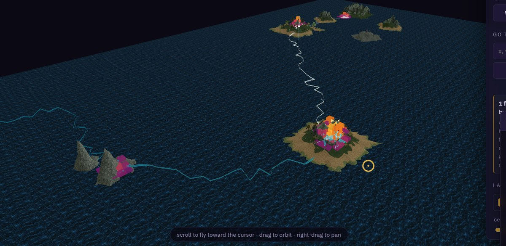
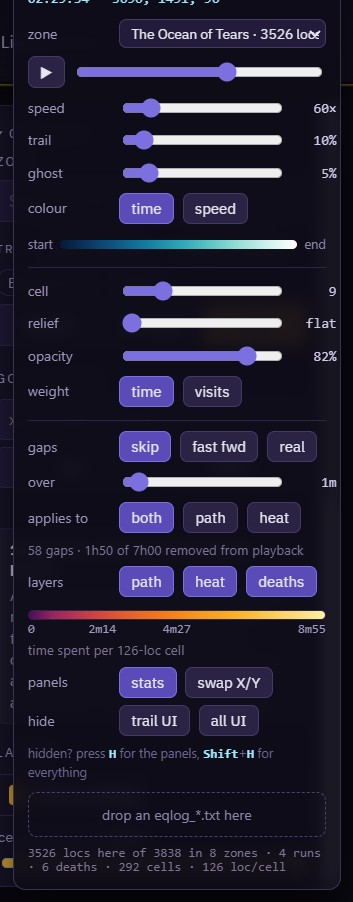
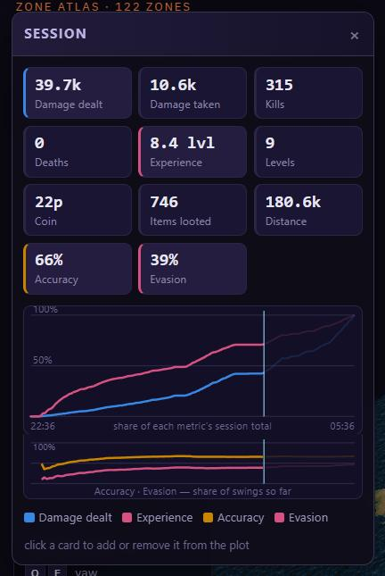
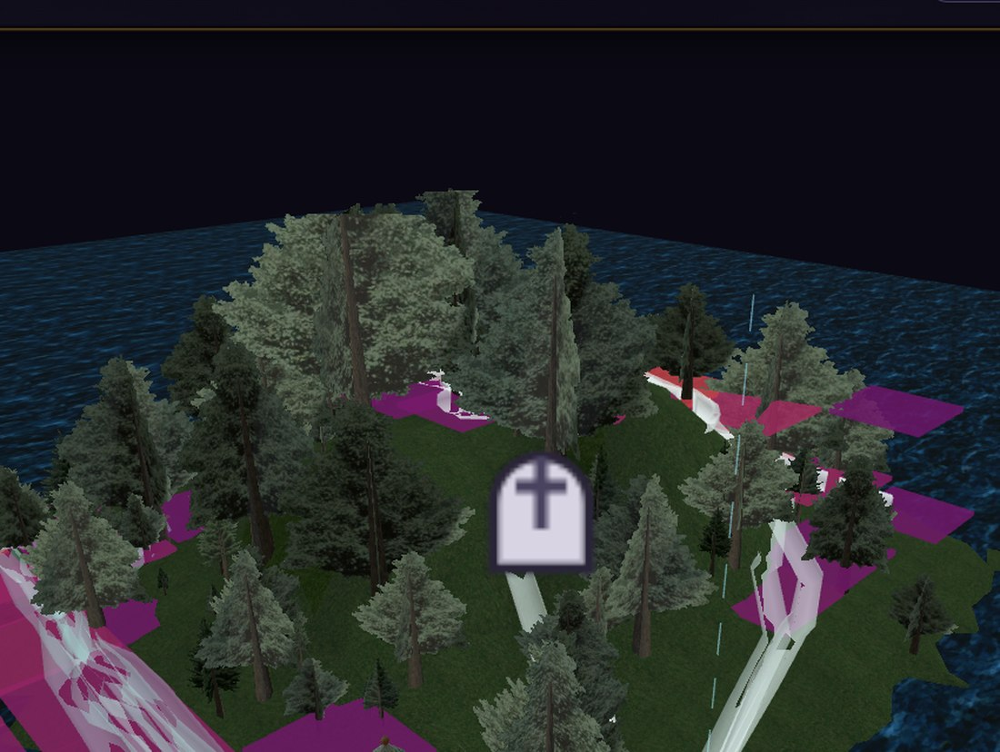
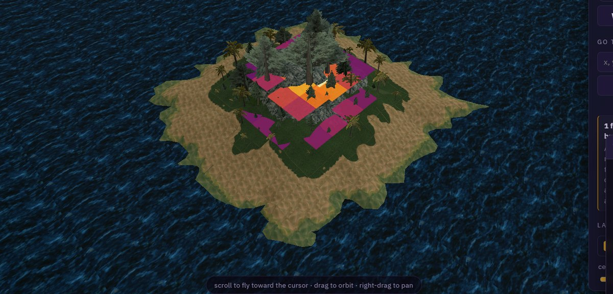

Drop your EverQuest log on the EQL Zone Atlas
and watch where you actually went — an animated 3D trail of your /loc track, and a
heatmap of where the time went.

eqlog_<Character>_<server>.txt onto it — or click it to browse.
Exactly one thing: /loc lines. That is the only line vanilla EverQuest writes that
carries a position.
[Mon Jul 27 20:14:06 2026] Your Location is 8277.13, -2583.59, 126.62Those three numbers are east, north, up — X first. Bind /loc to a
macro and let it fire while you play. You have entered <Zone>. lines are picked up
too, and are used to split a session by zone and load the right map for you.
Every line EQ writes is already stamped with the date and time — that bracket is the time
series. Your macro only has to say /loc.
If /loc only fires while you move, then standing still writes nothing — so the
map is measuring traffic, not time. Flip the panel's weight toggle to
visits for that kind of log and it counts samples instead, honestly. A /loc on a
fixed interval — every few seconds whether you're moving or not — makes both readings agree,
and time is then the better one. Either way, one AFK gap can never dominate the colours: a
single sample may claim at most 30 seconds.
Drop the whole thing. Logs are read in slices rather than all at once — two real files, 121 MB and 79 MB (1.5 million lines between them), each parsed in under three seconds, with a progress readout while it works.
A log that wanders through a dozen zones is normal. Every zone found gets an entry in the
panel's zone list, biggest first, with each zone's repeat visits merged into one series —
and EQ Trail starts on the zone you already have open if your log has any samples there,
rather than yanking you somewhere else. Zones the Atlas doesn't carry are marked no map
and drawn over whatever zone is open.
/loc lines inside one second arrive identical.
EQ Trail spreads a same-second run evenly across that second so playback doesn't stutter — it
invents no positions, it only distributes samples already known to fall inside that second.

| Control | What it does |
|---|---|
| ▶ / scrub | play, pause, or drag to any moment in the session |
| speed | log-seconds per real second |
| trail | how much track stays lit behind the moving head |
| ghost | opacity of the route not yet walked — 0 hides it |
| colour | tint the trail by time (when) or speed (how fast) |
| zone | every zone found in the log, biggest first — pick one and it loads that map |
| cell | heatmap bin size |
| relief | flat paints the floor; higher extrudes the heat into a 3D relief |
| weight | time = seconds per cell · visits = number of samples |
| layers | show or hide the path, the heat, and the death markers independently |
| gaps | how to treat long silences in the log — skip, fast fwd or real |
| over | how long a silence has to be before it counts as a gap |
| applies to | whether that policy touches both layers, just the path, or just the heat |
| stats | show or hide the Session panel |
| hide | trail UI hides our panels · all UI also hides the site's own chrome |
Both panels drag by their title bar, and every setting — including where you left them — is saved in your browser as you change it. Nothing from the log is ever stored.
Shift+H and the site's header, footer
and controls disappear along with our panels, leaving the map filling the window.
H alone hides just the Trail panels. Press the same keys again to bring everything
back — and while anything is hidden, a small reminder of the key sits in the corner, fading out so
it stays out of your capture and returning the moment you move the mouse. Neither is remembered
after a reload.
Your /loc stream isn't continuous. The macro stops, you camp a spawn, you go and make
a coffee. On a real seven-hour session that came to 58 gaps over a minute long, adding up to 1h50
— a quarter of the whole session. Played back as-is, that's a quarter of your time watching a dot
that isn't moving.
The gaps section fixes it. skip (the default) jumps over them, fast fwd runs them at 10× so you can still see that time passed, and real leaves them alone. over sets how long a silence has to be before it counts, and applies to chooses whether the rule touches the animation, the heatmap, or both.
Eleven numbers counted straight out of the log, all of them counting up in step with the
playback: damage dealt, damage taken, kills, deaths,
experience, levels, coin, items looted and distance travelled —
that last one measured from your own /loc track rather than from a line of text, which
is why it agrees with the map — plus accuracy and evasion, the share of swings that
landed on the way out and on the way in.
The two percentages get their own strip under the chart, sharing a single 0–100% axis with each other, so a hit rate and a damage total never end up on the same scale pretending to be comparable.

Click any card to add it to the plot underneath, or click it again to take it off. The curves are cumulative and get drawn as the playhead sweeps across, with the part you haven't reached yet left faint. Pick one metric and the axis is in that metric's own units; pick several and each is drawn as a share of its own session total, so a 50,000-damage curve and a 6-death curve can share one chart honestly.
The colour bar is labelled in real units — minutes and seconds per cell, or sample counts in visits mode — so a colour you see on the map can be read off the scale.

/loc track says you were standing.A gravestone marks every death, appearing as the playback reaches it. Where it stands
comes from your own /loc track at that moment — and if there is no /loc
anywhere near the death, no stone is placed rather than one guessed into the wrong spot; the panel
tells you how many were left out.

Download the extension zip, unzip it, then in Chrome or Edge
open chrome://extensions, turn on Developer mode, and choose
Load unpacked → the unzipped folder. Firefox requires signed add-ons for a permanent
install, so on Firefox use the userscript.
Open a zone on the Atlas, open the developer console, and paste the contents of
eqtrail-overlay.js.
Same overlay — the packaged versions are just that file plus a "wait until the page is ready"
wrapper. It lasts until you reload.
Check that you're on a zone page (eqltools.com/atlas?zone=…) and that the 3D view
has finished loading. Open the console: EQ Trail logs [EQTrail] ready when it
attaches, and says so plainly if the page never published the handle it hooks into. If you dropped
a log and got a message about no location lines, the log has no /loc output in it —
check the macro is actually firing, and that you grabbed the right
eqlog_*.txt.
EQ Trail doesn't copy the Atlas or re-host any map data — it runs on the Atlas page and
adds two objects to the scene the site already draws. It hooks the debug handle
app.js publishes, converts each /loc through the site's own coordinate
transform, and parents the trail and the heat into the floor-band groups, so both ride the
exploded-floors animation, the height slider and the per-floor clipping exactly like the site's own
markers do.
Source, the synthetic test logs, and notes on the parts that are easy to get wrong live in the GitHub repository.